Got back to Amsterdam after a couple of years with a couple of friends. We stayed away from most of the touristy places.

Shashwat Joshi and Manan Tomar joined me on this trip.
Discovered Foodhallen, which was a very chill place with good food and good music, and best of all, no tourists!
Roaming the streets, developing my night photography skills.

 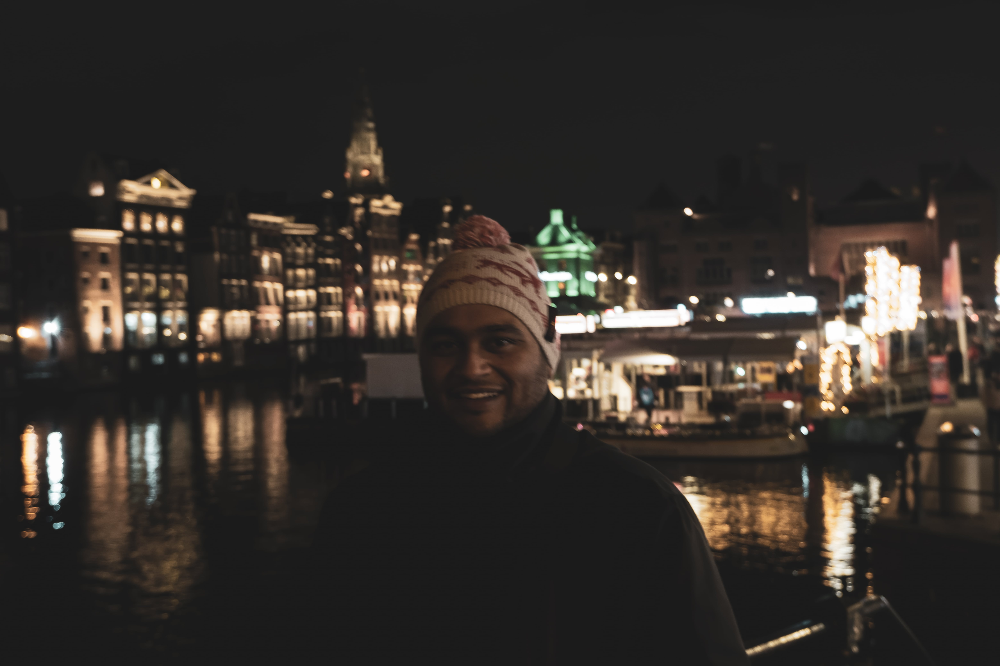
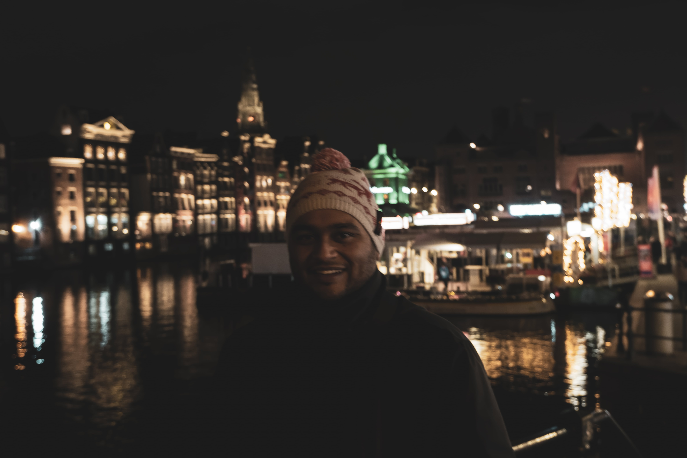
Started bright and early the next morning ;), took some portraits.

 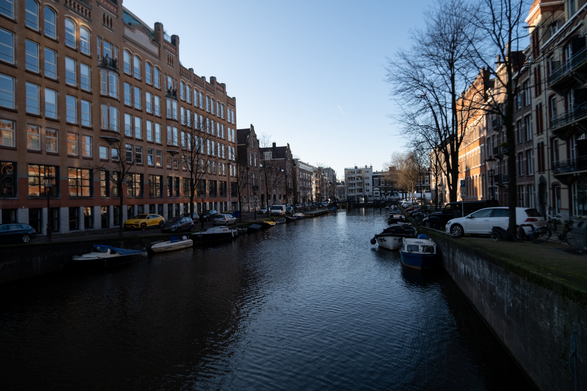
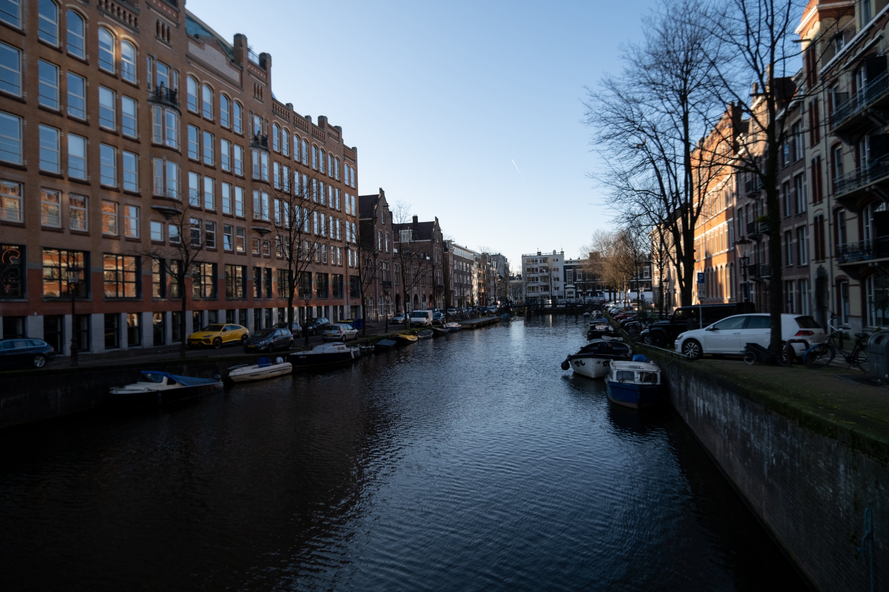
 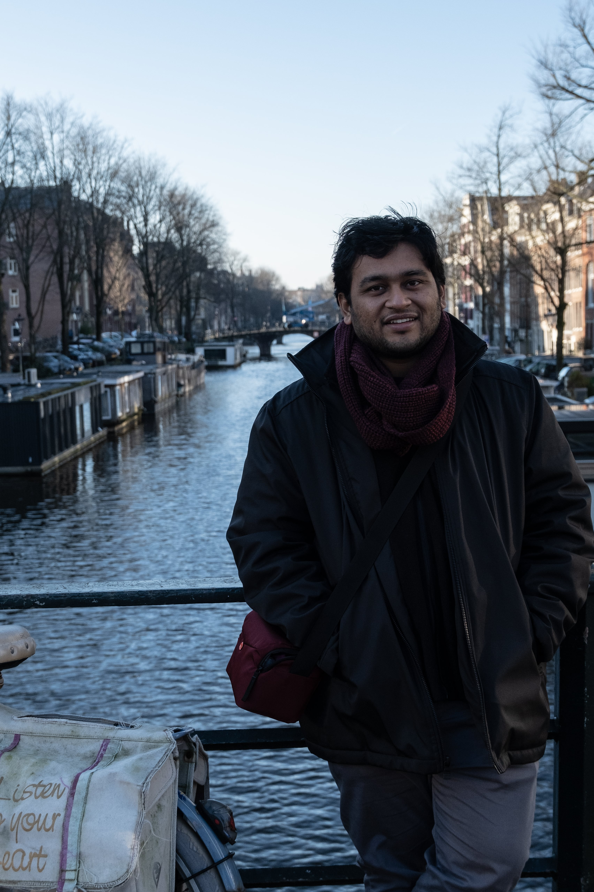
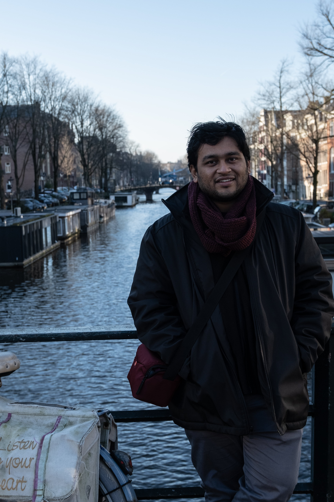

An important reminder after joining the RCA.
 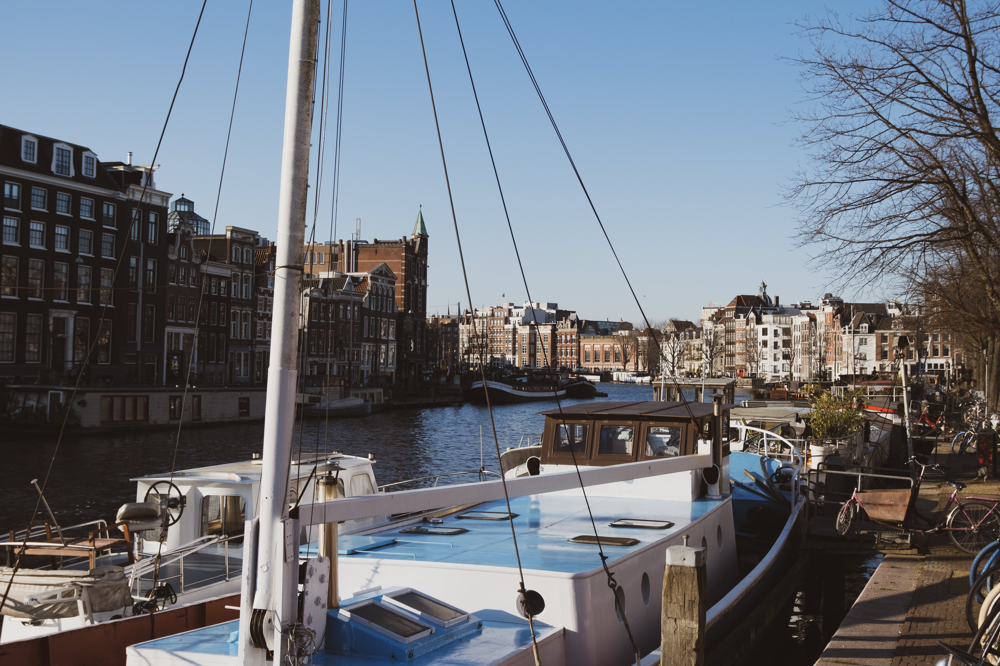
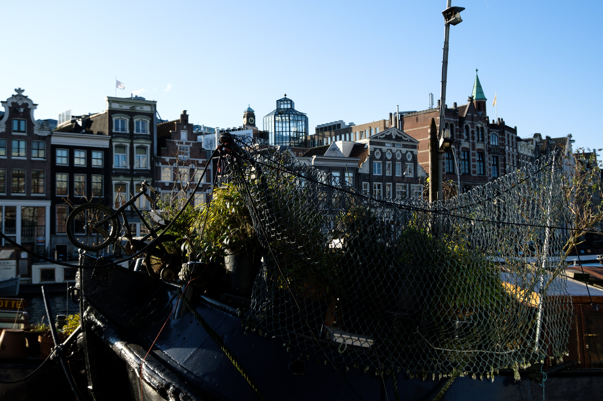
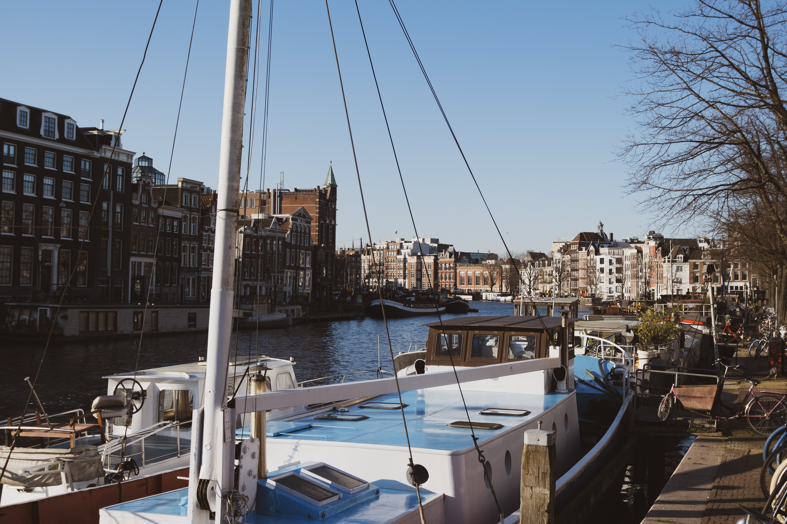
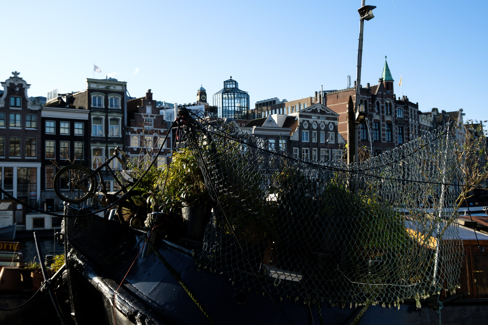
 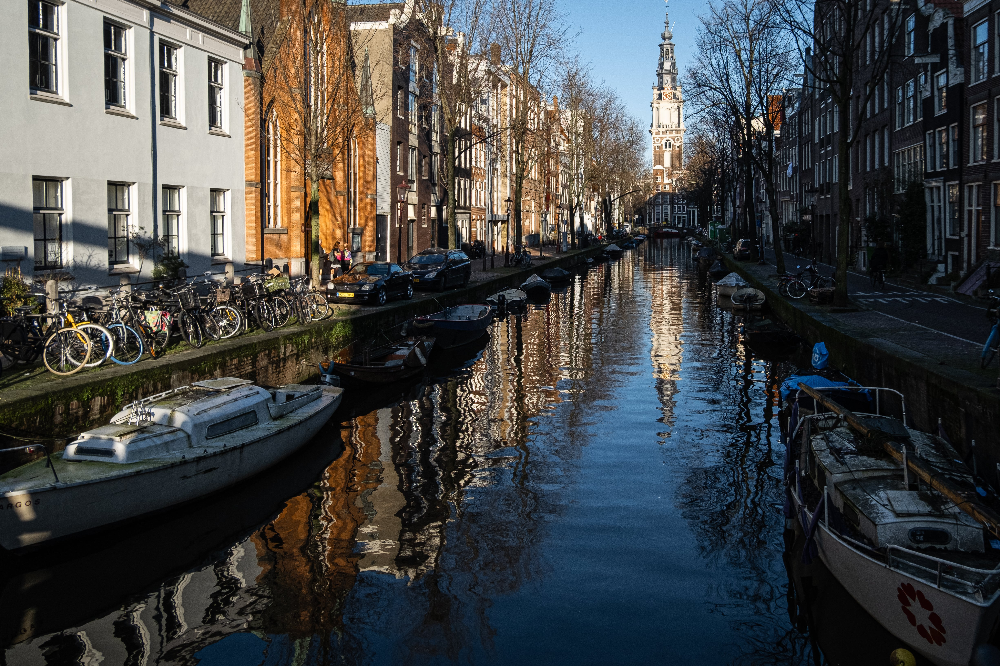
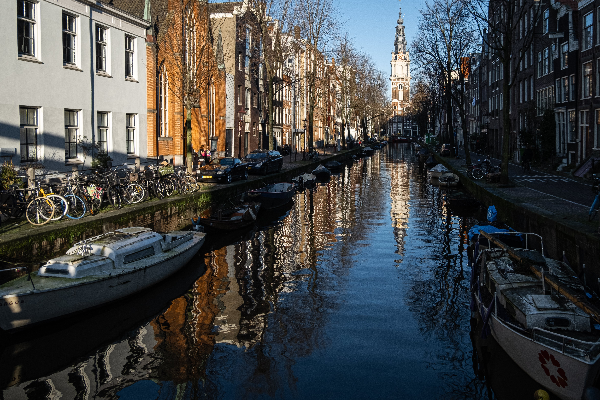

 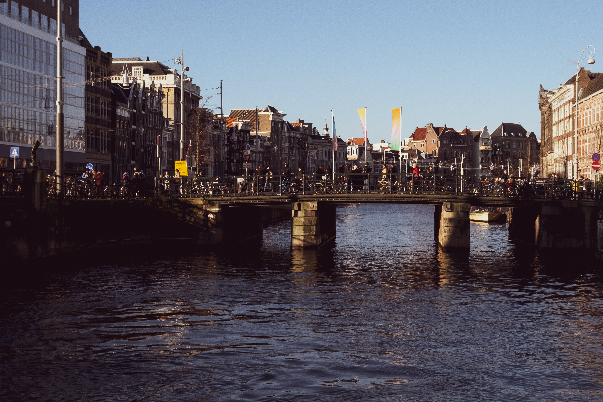
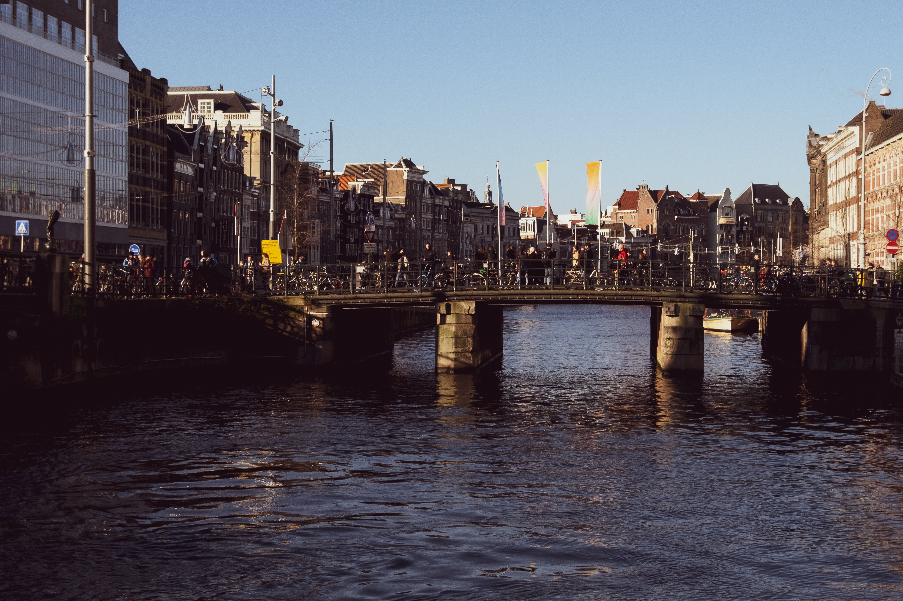

Finally ended up going to the Rijksmuseum.
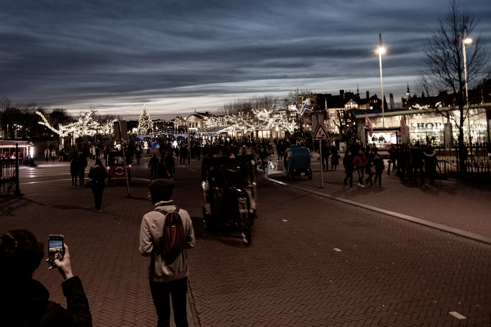